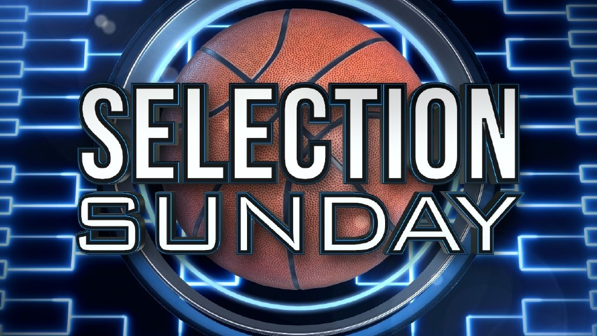

How is the tournament set up?
The NCAA Division I men’s basketball tournament is a single-elimination
tournament of 68 teams that compete in seven rounds for the national championship.
The penultimate round is known as the Final Four, when (you guessed it)
only four teams are left.
When is this year's tournament?
Here is the full schedule for the 2024 NCAA men's
basketball tournament:

How are the matchups decided?
The Sunday before the tournament starts the matchups are decided by
the Selection Committee. The Selection Committee creates a bracket based off of
the 32 teams that won their conference tournament and the next best 36 teams. There is
a fair amount of controversy each year on what teams are left out but at the end of the day the
Selection Committee definitely knows best. Those 68 teams are then ranked and then split into 4 different
categories (also known as regions). Within those regions there are 16 "seeds" or rankings.
The best team in the category is the 1st seed while the worst is the 16th seed. The 1st and the 16th seed
play each other in the first round of the tournament. The 2nd and 15th, 3rd and 14th, 4th and 13th etc.. seeds also
play each other. The winner moves on to the next round.
- Selection Sunday: Sunday March 17
- First Four: March 19-20
- First Round: March 21-22
- Second round: March 23-24
- Sweet 16: March 28-29
- Elite Eight: March 30-31
- Final Four: April 6
- NCAA Championship Game: April 8
What are some terms used throughout the tournament?
-
At-large bid — Teams that receive a
bid to the NCAA tournament are broken into two categories
: At-large bids, and automatic bids. The selection committee
hands out 36 at-large bids to teams that did not win their
conference tournament, but impressed the committee enough
to earn a trip to the tournament. There is no limit on the number
of at-large teams the committee may select from one conference.
- Automatic Bid -
In Division I, there are 32 conferences. Each has its own conference tournament at the conclusion of the regular season. Teams that win this tournament, regardless of their regular-season performance, automatically earn a trip to the NCAA tournament.
- AP ranking
The Associated Press has been ranking the top basketball teams since 1948. In its current form, the poll ranks the top 25 teams in Division I via a ranking that is compiled from the ballots of 65 sports journalists across the country. The ranking has no official weight in the selection process, and even a No. 1 ranking in the AP poll does not technically guarantee a team a bid to the NCAA tournament.
- The bubble -
A team that is “on the bubble” for the NCAA tournament is one whose qualification for the tournament could go either way. They’re on the verge of making the field of 68, but an invitation isn’t guaranteed.
- Cinderella -
Much like the titular character from the fairy tale, a Cinderella team is one that is much more successful than expected. Examples in March would be Villanova’s 1985 championship run, when the eighth-seeded Wildcats became the lowest seeded team to ever win the title, knocking off the heavy favorite Georgetown.
- Elite Eight -
The fourth round of the tournament, when just eight teams remain, is known as the Elite Eight. This round is the final game for each regional, before the four winners move on to the national semifinal, known as the Final Four
- Final Four -
The fifth round of the tournament, when just four teams remain, is known as the Final Four. This is the penultimate round of the tournament, when the winners of each regional face off for a chance to play in the championship game.
- First Four -
When the NCAA tournament was expanded to 68 teams, a new round was added to the format: The First Four. Four games, played on the Tuesday and Wednesday after Selection Sunday determine which of eight teams advance to the first round of the tournament.
- First four out
When ranking all 68 teams in the NCAA tournament, the First Four Out fall in spots 69-72. These teams will not make the NCAA tournament, but will be the top-seeded teams in the NIT Championship.
- Last four in
Another unofficial term, the "last four in" refers to the final four teams that receive at-large bids to the tournament. These are teams that are usually on the bubble as Selection Sunday draws near.
- Regional -
The NCAA tournament bracket is split into four regionals. The South, East, West, and Midwest. The first four rounds of the tournament are played in regionals, with the Elite Eight serving as the regional championship game. Teams are assigned a regional based on a combination of factors, such as overall seed, proximity to the regional, the other teams in that regional, and more.
- Seed -
68 teams earn bids to the NCAA tournament, and each one receives a seed — from 1 to 16 —that determines where the team will be placed in the bracket. After the First Four, there are four of every seed. The seeds are also ranked overall from 1 to 68. This overall ranking affects the order in which team locations are selected (with higher-ranked teams getting preference), and which teams play in the First Four (the four lowest-seeded at-large teams and the four lowest-seeded automatic qualifiers go to the First Four).
- Selection Committee -
The 10-member NCAA Men's Division I Basketball Committee is responsible for selecting, seeding and bracketing the field for the NCAA Tournament. School and conference administrators are nominated by their conference, serve five-year terms and represent a cross-section of the Division I membership.
- Selection Sunday -
The day everyone waits for, when the Selection Committee announces the tournament field. This year, Selection Sunday is March 17.
- Sweet 16 -
The third round of the tournament, where only 16 teams remain. The winner of each game will play in the Elite Eight.